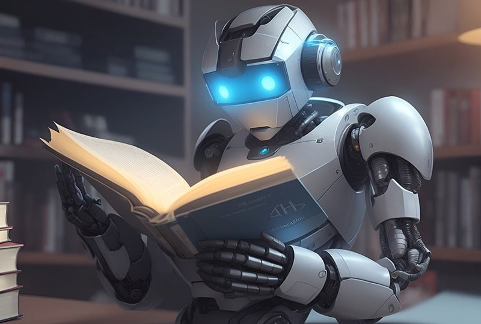

Urutan Lengkap Menonton Anime Sword Art Online Berserta Sinopsisnya
Simak Panduan Menonton Sword Art Online berikut, di mana urutan disusun berdasarkan tahun rilis serial Sword Art Online. Sword Art Online sendiri adalah anime yang diadaptasi dari serial novel ringan karya Reki Kawahara.
Hingga saat ini, terdapat tiga musim, 2 season spin-off, 3 film, dan OVA (Original Video Animation). Bagi Anda yang bingung dari mana memulainya, berikut panduan urutan menonton Sword Art Online beserta sinopsisnya.
1. Sword art Online (2012)
Urutan pertama dalam daftar ini adalah Sword Art Online Season 1 yang dirilis pertama kali pada Juli 2012.
Anime ini menceritakan pemain MMORPG realitas virtual, Sword Art Online (SAO), terjebak dan berjuang untuk kehidupan mereka. Setelah diumumkan jika satu-satunya jalan untuk keluar dari permainan ini adalah dengan cara mengalahkannya. Kirito yang merupakan seorang pendekar pedang yang sangat kuat, dia berjuang dengan teman-temannya melakukan misi untuk dapat membebaskan semua orang yang terperangkap dalam dunia Sword Art Online yang disebut dengan Aincard.
2. Sword Art Online: Extra Edition (2013)
Selanjutnya adalah Sword Art Online Extra Edition yang dirilis pertama kali Desember 2013. Dan ini tentunya adalah episode fan service atau adegan khusus memuaskan penggemar, jadi ini tentunya hanya episode tambahan jadi boleh ditonton, boleh juga tidak karena tidak mempengaruhi jalannya cerita.
Sword Art Online Extra Edition sendiri menceritakan Kirito yang dipanggil untuk pertemuan konseling darurat di sekolah barunya, sementara itu saudara perempuannya mengikuti pelajaran bersama teman-teman mereka. Disana dia bertemu dengan anggota elit Divisi Virtual Kementerian Dalam Negeri. Kirtio kemudian memberitahukan detail mengenai apa yang sebenarnya telah terjadi di Aincrad dan Alfheim.
3. Sword art Online II (2014)
Selanjutnya setelah menonton Sword Art Online Season 1 atau Extra Edition bisa dilanjut ke Sword Art Online Season 2 dan anime ini dirilis pada Juli 2014.
Sword Art Online Season 2 ini menceritakan setelah satu tahun insiden SAO terselesaikan, Kazuto "Kirito" Kirigaya sekali lagi dia menyesukan diri dengan kehidupan normalnya sebaikk yang bisa mampu. Dia mengira semua kematiann akhirnya telah berlalu, sampai akhirnya dia didekati dengan beberapa informasi yang mengejutkan.
Salah satunya adalah dalam MMO penembak profesional bernama Gun Gale Online yang sangat populer, seorang pemain jahat telah menembak pemain di dalam game, dan ada seorang pemain yang sama secara misterius mati di kehidupan nyata. Kazuto merasa dirinya ditarik seolah-olah oleh bayangan SAO dan setuju untuk melakukan penyelidikan. Dia sekarang harus melangkah kembali ke dunai gelap masa lalunya dengan bantuan dari penembak jitu bernama Shinon yang bermasalah dan dingin sedingin es untuk membantunya mencari pemain bernama "Death Gun".
4. Sword art Online: Ordinal Scale
Setelahnya dilanjut Sword Art Online Movie Ordinal Scale yang dimana film ini dirilis pada 18 Februari 2017.
Adapun film ini menceritakan pada tahun 2026, tepat dua tahun semenjak insiden SAO, sebuah game baru bernama "Ordinal Scale", sebuah MMO Augmented Reality yang menjadi populer di kalangan para pemain. Namun ada hal aneh yang terjadi di dalam game dan Kirito serta kawan-kawannya menghadapi bahaya yang baru.
5. Sword art Online Alternative: Gun Gale Online
Lalu dilanjut nih menonton spin-off dari Sword Art Online, dan berjudul "Sword Art Online Alternative: Gun Gale Online" dimana anime ini dirilis pada April 2018.
Sword Art Online Alternative: Gun Gale Online mengambil latar dari Sword Art Online Season 2 tepatnya setelah Shino dan Kirito mengalahkan Death Gun, serial ini menggambarkan permainan battle royale "Gun Gale Online" dimana peluru beterbangan antara karakter utama yaitu LLENN dan musuh bebuyutannya Pitohui.
6. Sword art Online: Alicizaton (2018)
telah menonton Sword Art Online Movie Ordinal Scale atau spin off Sword Art Online Alternative Gun Gale Online dapat dilanjut menonton Sword Art Online: Alicization, dimana anime ini dirilis pada Oktober 2018.
Sword Art Online: Alicization menceritakan Kazuto "Kirito" Kirigaya yang diserang dan menderita kerusakan pada otaknya. Untuk dapat menyelamatkan nyawannya dan pada saat yang sama dia sedang menjalankan proyek di Rath, Kikuoka Seijirou menempatkan Kazuto di mesiln STL(Soul Translator).
Kazuto pun berakkhir sebagai Kirito di dunia baru yang bernama Underworld. Dia berteman dengan seorang anak laki-laki bersama Eugeo dan bersama-sama mereka mencoba untuk menyelamatkan seorang gadis bernama Alice yang diambil dari desa Eugeo bertahun-tahun yang lalu.
7. Sword art Online: Alicization - War of Underworld 2019
Kemudian dilanjut ke Sword Art Online: Alicization - War of Underworld yang mana anime ini dirilis Oktober 2019.
Sword Art Online: Alicization - War of Underworld menceritakan setelah Kirito mengalahkan administrator. Becouli berusaha untuk membangun kembali dan memperkuat pertahanan tanah manusia dari serangan kekuatan Dark Terithory, Alice dia khawatir dengan keselamatan Kirto yang koma dan dia pindah ke kabin dekat Ruild.
Dia mungkin tidak diterima di desa, tetapi setidaknnya dia dekat dengan adik Alice, Selka saat dia menjaga Kirito. Meski dia merasa dia tidak bisa mengayunkan pedangnnya lagi kecuali hanya digunakan untuk menebang pohon, tetapi serangan terhadap Ruild memaksa Alice untuk bertindak.
8. Sword art Online: Alicization - War of Underworld Part 2 (2020)
Setelahnya dilanjut Sword Art Online Alicization - War of Underworld Part 2, dimana anime ini dirilis pada Juli 2020.
Sword Art Online Alicization - War of Underworld Part 2 menceritakan Perang Underwolrd kini memasuki babak baru. Vecta dan Critter memikat ribuat pemain dari berbagai belahan dunia untuk memasuki Underworld sehingga Vassago dapat menggunakannya untuk dapat melawan Tentara Manusia.
Pasukan Manusia mendapat dukungan dari teman-teman ALO namun mereka kalah dari segi jumlah. Kenyataannya krut Rath yang berada di Kura-Kura Laut harus menghadapi masalah mereka sendiri.
9. Sword art Online: Progressive - Aria of Starless Night (2021)
Selanjutnya ada film Sword Art Online the Movie: Progressive - Aria of a Starless Night yang dimana film ini dirilis pada 30 Oktober 2021.
Sword Art Online the Movie: Progressive - Aria of a Starless Night mengambil cerita dari season 1 bagian 1 yang dimana mengambil sudut pandang dari karakter Asuna dan menceritakan setelah melihat Asuna yang tampak terlihat stress akibat beban pekerjaan sekolahnya, Misumi pun menyarankan agar dia untuk bersantai dulu dan memainkan game baru bernama Sword Art Online.
Kini mereka terjabk dalam game kematian VR tersebut dan Misumi berusaha mati-matian untuk mengajari Asuna apa yang dia butuhkan untuk bertahan hidup. Tapi di dunia yang penuh bahaya dan jumlah kematian pemain yang sudah mencapai ratusan orang, mereka mungkin tidak cukup untuk dapat bertahan hidup.
10. Sword art Online: Progressive - Scherzo of Deep Night (2022)
Sword Art Online the Movie: Progressive - Scherzo of Deep Night adalah serial selanjutnya yang dapat ditonton dimana film anime ini dirils pada 22 Oktober 2022, serta kelanjutan dari Sword Art Online the Movie: Progressive - Aria of a Starless Night.
Sword Art Online the Movie: Progressive - Scherzo of Deep Night menceritakan Ribuan orang yang masih terjebak di dalam video game VR yang kini telah beruh menjadi game kematian Sword Art Online.
Namun, semua harapan tidak akan hilang. Sejak kekalahan dari bos pertama, sekolompok kecil pemain terus maju, dan membuat kemajuan yang lambat namun stabil dalam menyelesaikan misi dungeon seratus lantai. Kini mereka menghadapi banyak tantangan baru baik dari dungeon itu sendiri maupun dari sesama pemain dan hal ini dapat mengancam semua yang telah mereka bangun selama ini.
11. Sword art Online Alternative: Gun Gale Online Season 2 (2024)
Terakhir dan terbaru adalah Sword Art Online Alternative: Gun Gale Online Season 2 yang mana ini merupakan lanjutan dari spin off Sword Art Online Alternative: Gun Gale Online dan akan dirilis pada Oktober 2024.
Sword Art Online Alternative: Gun Gale Online Season 2 mengadaptasi volume 4 dari novel ringannya dan menceritakan Pitohui yang merupakan musuh lama dari Llenn kini bergabung dan semenjak saat itu mereka membentuk tim yang diberi nama LPFM, anggota tim ini terdiri dari Llenn, Pitohui, Fukaziroh, dan M, serta akan memasuki Squad Jam ketiga dan mengatasi persaiangan yang sengit untuk dapat meraih kemenangan.
Namun, segalannya tak berjalan sempurn, saat memasuki area yang tak dikenal, ada aturan khusus yang tidak akan berlaku sampai kompetisi tersebut mendekati akhirnya.
Demikian panduan dan urutan menonton serial anime Sword Art Online, semoga dapat membantu bagi teman-teman yang akan memulai menonton serial anime ini.
Cognition Labs Kenalkan Devin, Programmer AI Pertama

Sebuah inovasi baru telah muncul di dunia teknologi dengan diperkenalkannya Devin, sebuah model kecerdasan buatan yang diklaim mampu menjadi seorang insinyur perangkat lunak. Cognition Labs, sebuah startup teknologi yang berbasis di Amerika Serikat, secara resmi memperkenalkan Devin dan mengklaim bahwa AI ini dapat melakukan pekerjaan teknis yang kompleks seperti menyelesaikan proyek pemrograman dari awal hingga akhir, membangun situs web dan aplikasi, serta melatih model AI-nya sendiri.
Menurut perusahaan, Devin telah melewati wawancara teknik dari perusahaan AI terkemuka dan bahkan berhasil menyelesaikan pekerjaan nyata di platform freelance Upwork. Hal ini menimbulkan pertanyaan menarik tentang potensi Devin untuk menggantikan peran seorang insinyur perangkat lunak manusia.
"Devin adalah standar baru di SWE-Bench coding benchmark, telah berhasil melewati wawancara teknik praktis dari perusahaan AI terkemuka, dan bahkan telah menyelesaikan pekerjaan nyata di Upwork," tulis Cognition Labs.
Perusahaan menjelaskan kemampuan Devin melalui sebuah post blog yang mengungkapkan potensi luar biasa AI ini. Berdasarkan postingan dan demonstrasi video yang disertakan, Devin mampu belajar menggunakan teknologi yang belum dikenal sebelumnya, serta mampu membangun dan menerapkan aplikasi secara mandiri dari awal hingga akhir. Kemampuannya tidak berhenti di situ, karena Devin juga secara otomatis dapat menemukan dan memperbaiki bug dalam basis kode, mengatasi masalah bug dan permintaan fitur dalam repositori sumber terbuka, bahkan berkontribusi pada repositori produksi yang sudah matang. Keunggulan Devin semakin terbukti dengan pencapaiannya mencetak skor 13,86 persen dalam benchmark coding SWE-bench, jauh melampaui model AI besar lainnya seperti Claude 2 dan GPT-4. Namun yang lebih menarik, perusahaan mengklaim bahwa Devin mampu menyelesaikan masalah tanpa bantuan, menandakan kemampuan otonom yang sangat impresif dari AI ini.
Cognition Labs mempromosikan Devin sebagai "programmer pertama" yang telah berhasil mencetak skor tinggi dalam benchmark coding SWE-Bench, bahkan melampaui model AI besar lainnya seperti Claude 2 dan GPT-4. Namun, perlu diperhatikan bahwa meskipun Cognition Labs telah membuat klaim besar tentang kemampuan AI mereka, klaim tersebut saat ini tidak dapat diverifikasi karena platform mereka belum tersedia di ranah publik. Selain itu, startup ini juga belum merilis laporan teknis yang rinci tentang model AI mereka, meskipun mereka menyatakan bahwa laporan tersebut akan segera dirilis. Saat ini, semua model AI lainnya yang berfokus pada pemrograman masih berperan sebagai asisten dan hanya dapat melakukan tugas berdasarkan instruksi tertentu dalam kapasitas terbatas, dengan bantuan dan petunjuk manusia dalam menentukan file mana yang perlu diedit.
Meskipun demikian, potensi yang ditawarkan oleh Devin AI sangat menarik. Model ini dilengkapi dengan cangkangnya sendiri, editor kode, dan peramban yang memungkinkannya untuk secara otonom menemukan, memperbaiki bug dalam kode, serta berkontribusi pada repository open source dan produksi. Devin juga dapat belajar menggunakan teknologi yang tidak dikenal, membangun aplikasi dari awal hingga akhir, dan bahkan menerapkan solusi tanpa bantuan eksternal.
Namun, pertanyaan yang muncul adalah apakah Devin benar-benar dapat menggantikan peran seorang insinyur perangkat lunak manusia. Meskipun kemampuannya sangat mengesankan, terdapat beberapa hal yang perlu dipertimbangkan.
Pertama, keberadaan Devin dapat memicu diskusi tentang masa depan pekerjaan teknis. Jika AI semakin mampu menggantikan peran manusia dalam pekerjaan yang membutuhkan kreativitas dan keputusan kompleks, hal ini dapat mengubah paradigma dalam berbagai industri. Namun, di sisi lain, hal ini juga dapat menimbulkan kekhawatiran tentang hilangnya lapangan pekerjaan bagi insinyur perangkat lunak manusia.
Kedua, penting untuk mengingat bahwa meskipun Devin dapat melakukan tugas-tugas teknis dengan tingkat kecanggihan yang tinggi, AI ini juga masih memiliki batasan dan keterbatasan. Klaim bahwa Devin dapat bekerja secara otonom dan mengatasi masalah tanpa bantuan eksternal perlu ditinjau lebih lanjut, terutama dengan adanya klaim bahwa model AI lainnya masih membutuhkan bantuan dan arahan manusia.
Selain itu, transparansi dan keamanan juga menjadi perhatian utama dalam pengembangan teknologi AI seperti Devin. Diperlukan laporan teknis yang rinci dan platform yang tersedia untuk publik agar klaim dan kemampuan AI ini dapat diverifikasi dan dipahami dengan lebih baik oleh komunitas teknologi.
Cognition Labs sebagai perusahaan pengembang AI juga harus mempertimbangkan dampak sosial dan etis dari penggunaan teknologi mereka. Perdebatan tentang keamanan data, privasi, dan penggunaan AI dalam konteks yang tepat perlu terus diajukan dan diperdebatkan.
Internet merupakan penemuan revolusioner yang mengubah dunia. Internet menghubungkan berbagai tempat di belahan dunia sehingga orang dapat berkomunikasi dengan mudah. Dahulu, 30 tahun yang lalu, orang berkirim surat, belajar, berdagang, periksa kesehatan, dan masih banyak hal lain harus dilakukan secara isik.
Saat ini, hal-hal tersebut dapat dilakukan dengan efektif dan eisien karena adanya internet.Jaringan komputer, internet, web, peramban, hypertext, http, www, Tethering, Wireless LAN (WLAN), Wireless Fidelity (wi-i), modem. Saat sekarang ini, internet dengan konten yang ada di dalamnya telah menjadi perpustakaan terbesar di dunia dimana telah diakses oleh 196,7 juta lebih manusia pengguna atau 73,7 persen dari seluruh penduduk Indonesia sampai pada akhir kuartal kedua tahun 2020. Jumlah pengguna ini bertambah 25.5 juta dari tahun lalu. Internet juga bermanfaat bagi pelajar di tingkat SMP. Pada bab ini kalian belajar konsep tentang jaringan komputer dan internet, bagaimana menghubungkan peranti dengan internet, dan konsep sederhana proteksi data dengan enkripsi.
A. Pengantar Jaringan Komputer dan Internet
Jaringan komputer adalah sekumpulan komputer yang terhubung dalam jaringan. Jaringan komputer memungkinkan komputer saling berbagi sumber daya dan bekerja sama melalui suatu protokol komunikasi.
Komputer pada jaringan komputer terhubung dengan menggunakan media kabel, fiber optik, atau media tanpa kabel (wireless). Internet dikenal pada tahun 1849 dengan istilah internetted yang berarti interconnected.
Namun, saat ini, istilah internet mengacu pada sistem jaringan komputer global yang digunakan untuk berkomunikasi antarperangkat komputer maupun antar jaringan komputer menggunakan protokol TCP/ IP (Transmission Control Protocol/Internet Protocol).
Jaringan yang terhubung dapat berupa jaringan pribadi, publik, akademik, bisnis, dan pemerintah dari lingkup lokal hingga global. Internet saat ini telah dapat menghubungkan komputer, perangkat telepon, CCTV, printer, dan bahkan perangkat lain yang dikenal dengan IoT (Internet of Things).
Pada bulan November 2006, internet dimasukkan dalam tujuh keajaiban dunia. Internet membawa berbagai macam sumber daya dan layanan informasi di dalamnya, seperti dokumen hypertext yang saling terkait dan aplikasi World Wide Web (WWW), surat elektronik, telepon, dan berbagi file.
Asal mula internet berasal dari penelitian dan pengembangan teknik pemaketan dan pengiriman data (packet switching) yang dilakukan oleh Departemen Pertahanan Amerika Serikat pada 1960-an. Penelitian ini diharapkan dapat membuat komputer berinteraksi dengan komputer lain untuk berbagi sumber daya komputer (seperti prosesor, memori, eksternal disk) secara bersamaan. Pendanaan yang kuat dari pemerintah dan swasta dari seluruh dunia membuat internet terus berkembang. Pada tahun 1990-an.
1. World Wide Web (WWW)
World Wide Web yang sering disebut sebagai "web" atau situs web adalah sistem informasi/aplikasi yang dapat diakses menggunakan internet. Web diakses oleh pengguna menggunakan perangkat lunak yang disebut peramban web dengan menuliskan alamat web yang disebut Uniform Resource Locators (URL)
Web atau situs web memiliki halaman- halaman web (web page) yang berisi data dan informasi yang tersimpan di web server dalam bentuk hyper text markup language (html) file. Ketika mengakses situs web, sebuah peramban web akan membaca halaman-halaman web melalui protokol yang disebut HTTP (Hypertext Transfer Protocol) atau aturan pentransferan hypertext.
Peramban web akan membaca html, menerjemahkannya, dan menampilkannya di peramban web. Melalui hyperlinks yang ada dalam sebuah halaman web, kita dapat meminta menelusuri halaman-halaman web untuk mencari informasi dan menampilkannya. Dengan hyperlinks inilah, seakan-akan pengguna 'meloncat' dari suatu halaman situs web ke halaman situs web yang lain. Proses meloncat dari satu tempat ke tempat lain melalui web ini sering disebut 'suring on the web' atau berselancar di web.
2. Surel. Electronic Mail (Email)
Surel. Electronic Mail (Email) atau dalam bahasa Indonesia disebut surat elektronik adalah aplikasi yang memungkinkan para pengguna internet untuk saling berkirim surat/pesan melalui internet. Para pengguna surel memiliki sebuah kotak surat (mailbox) elektronik yang tersimpan dalam suatu mail server. Kotak surat itu sendiri memiliki sebuah alamat sebagai pengenal agar dapat berhubungan dengan kotak surat lainnya, baik dalam bentuk penerimaan maupun pengiriman pesan. Pemilik mailbox sewaktu-waktu dapat mengecek isinya, menjawab pesan, menghapus, atau menyunting dan mengirimkan pesan surel.
3. e-Banking. Electronic Banking
e-Banking. Electronic Banking atau e-banking dapat diartikan sebagai aktivitas perbankan di internet. Layanan ini memungkinkan nasabah sebuah bank dapat melakukan hampir semua jenis transaksi perbankan melalui internet. Bank menyediakan situs web untuk bertransaksi dimulai dari pengecekan rekening, transfer dana antarrekening, hingga pembayaran tagihan bulanan (seperti: listrik, telepon, dsb.). Pada e-banking, biasanya diterapkan sistem keamanan yang ketat pada situs webnya agar tidak terjadi kejahatan perbankan.
B. Koneksi Internet
Internet adalah jaringan komputer global yang mampu menghubungkan komputer di berbagai belahan dunia. Ketika kita ingin menghubungkan peranti kita dengan internet, ada berbagai cara atau teknologi yang dapat kita gunakan. Diantara teknologi yang sering kita jumpai adalah menghubungkan peranti kita dengan teknologi tanpa kabel yang sering disebut Wi-Fi atau Wireless LAN. Adapun teknologi untuk koneksi yang menggunakan ponsel disebut dengan Tethering. Pada subbab ini kalian akan belajar bagaimana membuat koneksi dengan teknologi Wi-Fi dan tethering.
C. Proteksi Data dan File
Data merupakan sumber daya yang penting bagi individu atau kelompok penggunanya. Oleh sebab itu, data harus diproteksi dari berbagai risiko yang mungkin terjadi dan membawa dampak buruk bagi pemiliknya. Salah satu cara untuk melindungi data adalah dengan menggunakan enkripsi. Enkripsi adalah proses mengubah data menjadi bentuk yang tidak dapat dibaca oleh orang lain kecuali oleh orang yang memiliki kunci enkripsi. Dengan menggunakan enkripsi, data yang dikirimkan melalui internet akan aman dari pencurian data.
Saat ini, pencurian data dapat dilakukan dengan berbagai cara dan tingkat kecanggihan. Data dapat dicuri melalui jaringan komputer, melalui aplikasi, atau melalui kecerobohan penggunanya sendiri.
Cara Kerja Enkripsi
Enkripsi bekerja dengan cara sebagai berikut, dengan contoh Agus mengirimkan teks ke temannya Dewi.
Data asli (sering disebut plain text) dari Agus dienkripsi dengan fungsi (cipher) tertentu.
Hasil enkripsi berupa ciphertext, sebagai teks yang terenkripsi.
Ciphertext dikirimkan ke Dewi melalui jaringan internet/komputer.
Dewi menerima ciphertext dan dilakukan Dekripsi.
Pesan kembali ke pesan asli sehingga dapat dibaca oleh Dewi.